基于离线强化学习的智能混动模式切换策略优化
以 WLTC 为目标工况，以控制混动模式切换和发动机输出功率为手段，以保证电平衡下累计油耗最低为目标，验证 Model-based Offline RL 技术在汽车混动标定问题上的有效性。
客户业务场景沟通
训练数据对接
动力学环境模型
油耗反馈建模
Offline RL 策略训练
模式切换智能体
真实环境对比测试
油耗优化验证
对客户提供的混动车辆运行数据进行清洗、分析和特征工程处理，构建训练数据集。
WLTC 工况下较优的混动架构，优化空间为模式切换策略（纯电-串联-并联）与发动机输出策略。
构建环境模型：输入当前状态及混动模式，输出下一时刻状态与油耗奖赏反馈。
设计离散动作空间智能体：输入当前状态，输出纯电/串联/并联三种离散混动模式。
验证环境动力学模型对真实车辆行为（车速、混动模式、发动机、电机、电池等 13 个维度）的拟合精度。
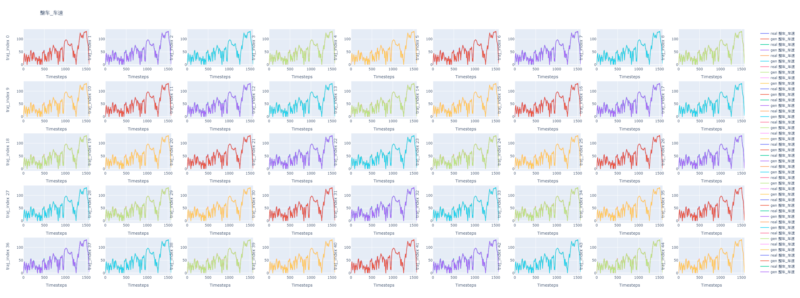
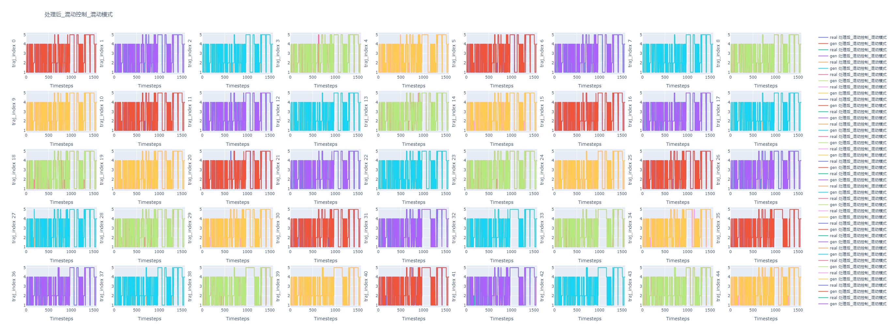
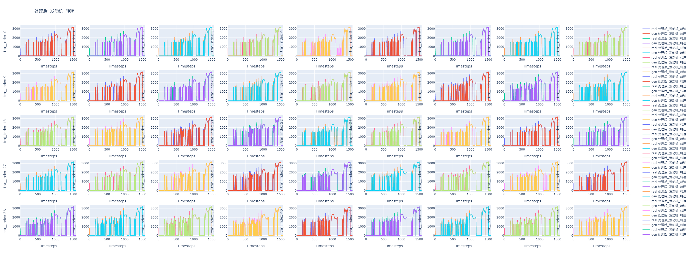
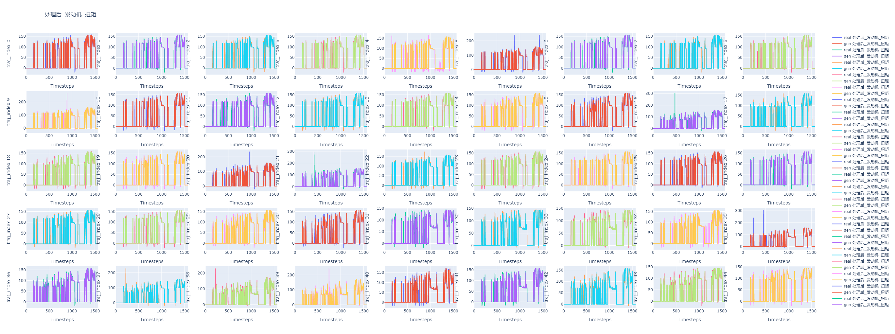
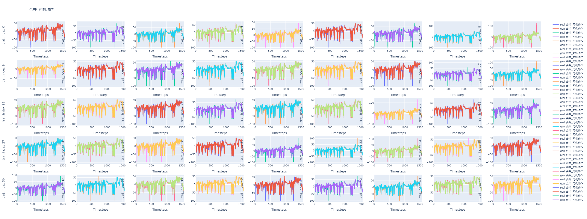
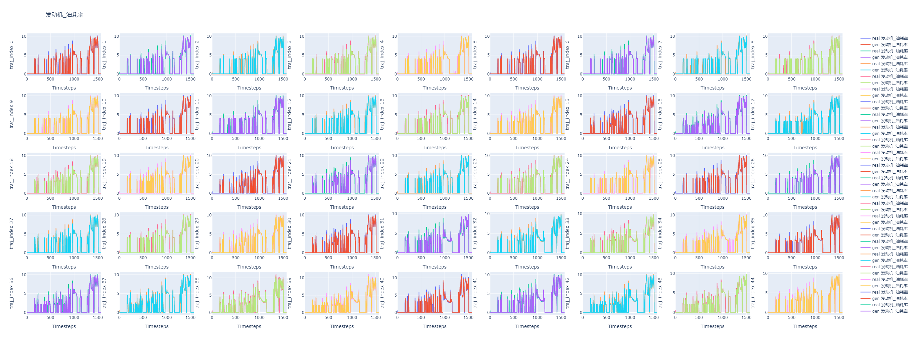
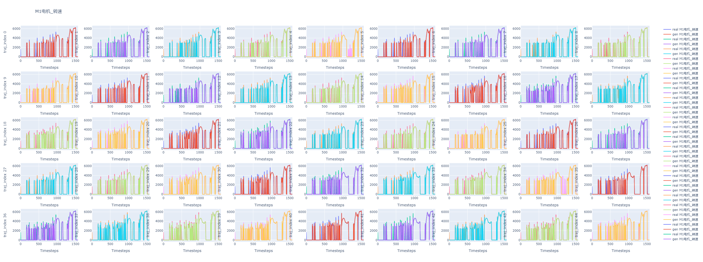
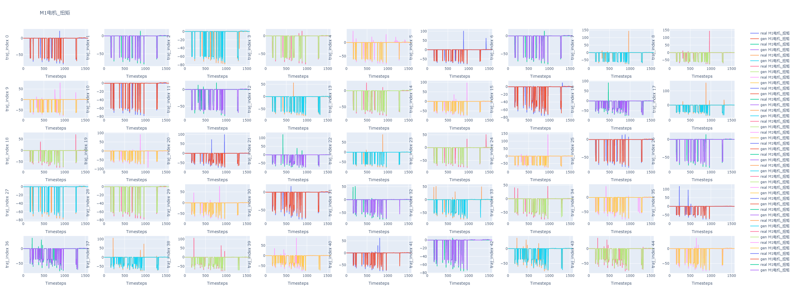
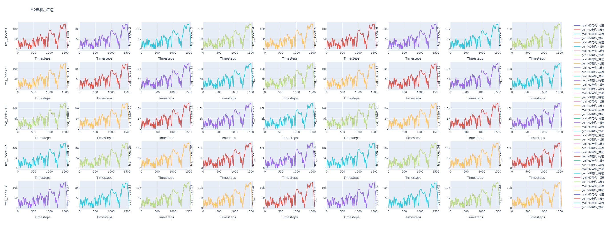
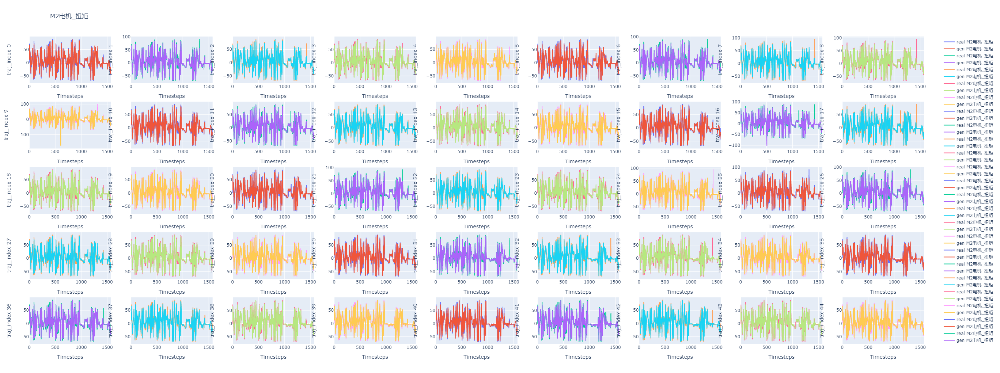
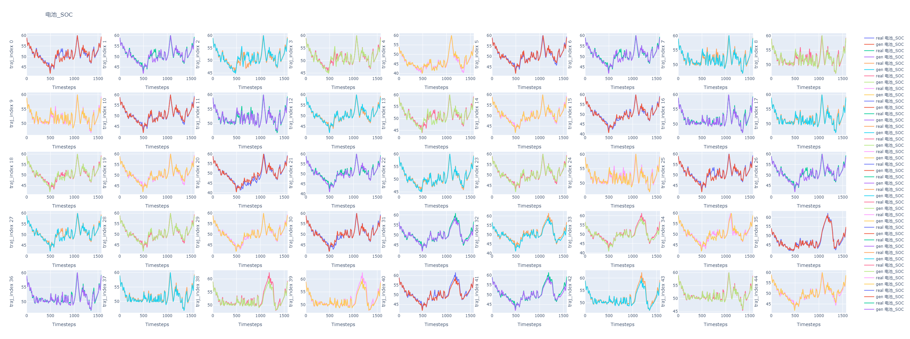
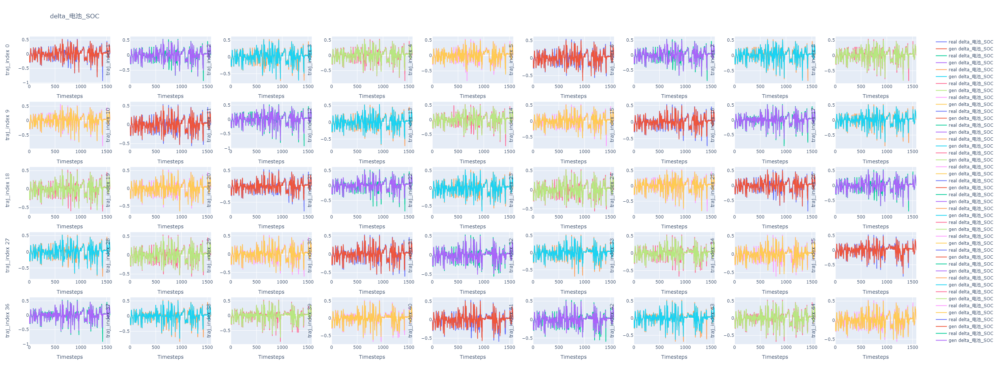
修复训练数据问题后重新迭代，环境模型在各项指标的拟合精度进一步提升。
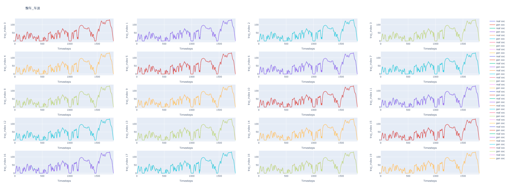
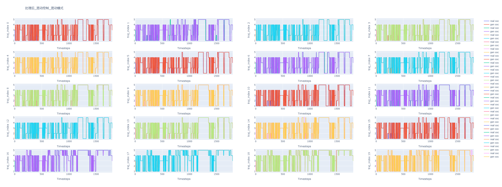
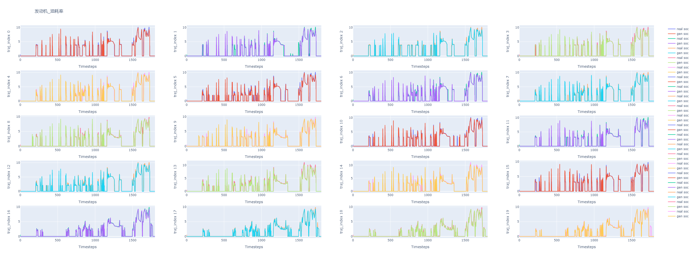
将 Offline RL 训练得到的南栖策略在真实车辆环境中与对照策略进行对比评估，验证油耗优化效果。
| 策略 | 虚拟终点电量 | 虚拟油耗 | 真实终点电量 | 真实油耗 |
|---|---|---|---|---|
| 对照策略 | 59.0 | 4.77 | 59.5 | 4.68 |
| 南栖策略 2-1 | 57.5 | 4.63 | 59.8 | 4.66 (-0.4%) |
| 南栖策略 2-2 | 57.5 | 4.57 | 37.7 | 4.45 (-4.9%) |
| 南栖策略 2-3 | 67.5 | 4.85 | 58.4 | 4.70 (+0.4%) |
| 南栖策略 3-1 | 58.3 | 4.41 (-4.8%) | 49.0 | 4.64 (-0.9%) |
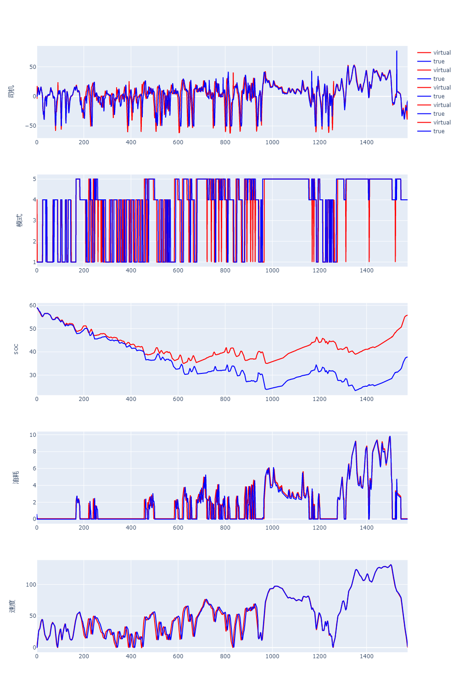
在修复环境模型电量推断问题后，进行第三轮策略训练与评估，并在虚拟环境中对比优化前后策略的油耗与电量表现。
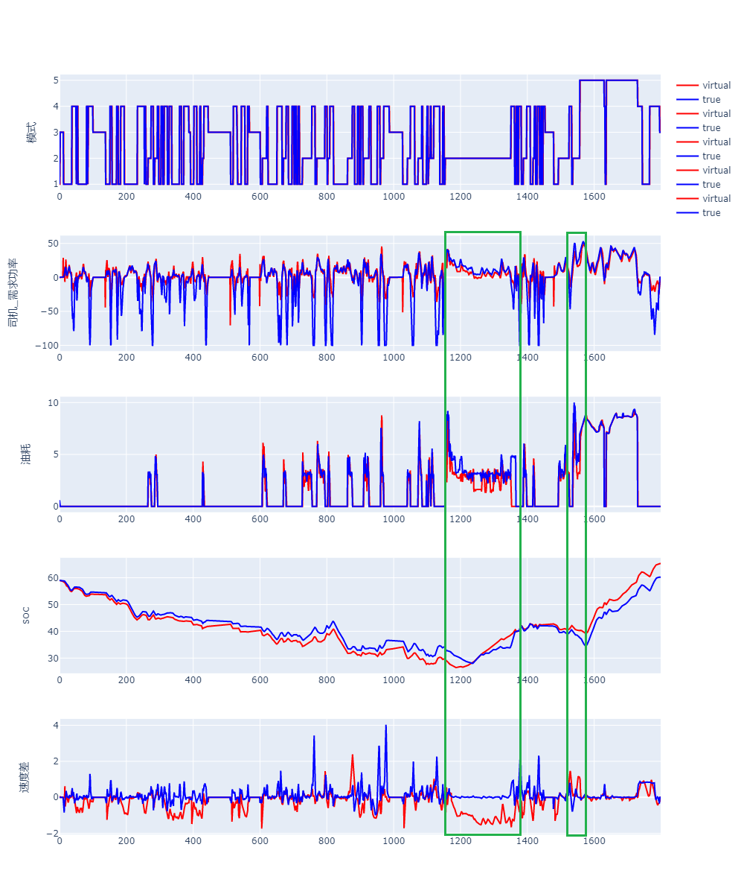
在虚拟环境中对比对照策略与 RL 优化后策略在各维度的表现差异。
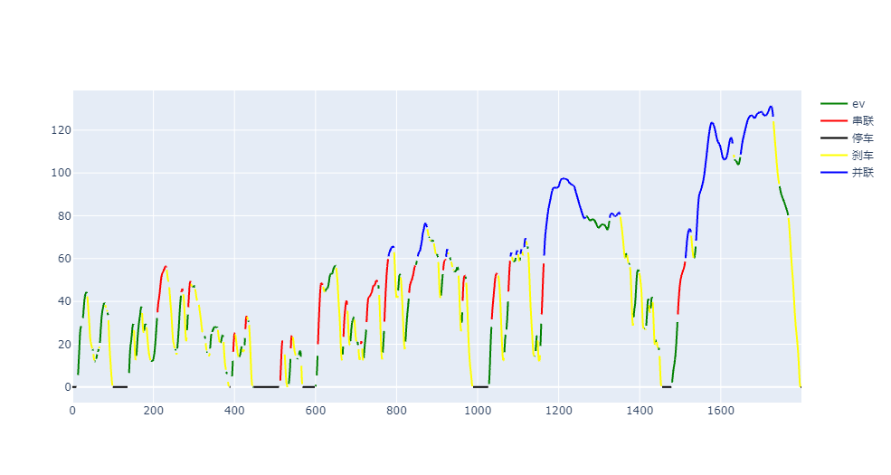
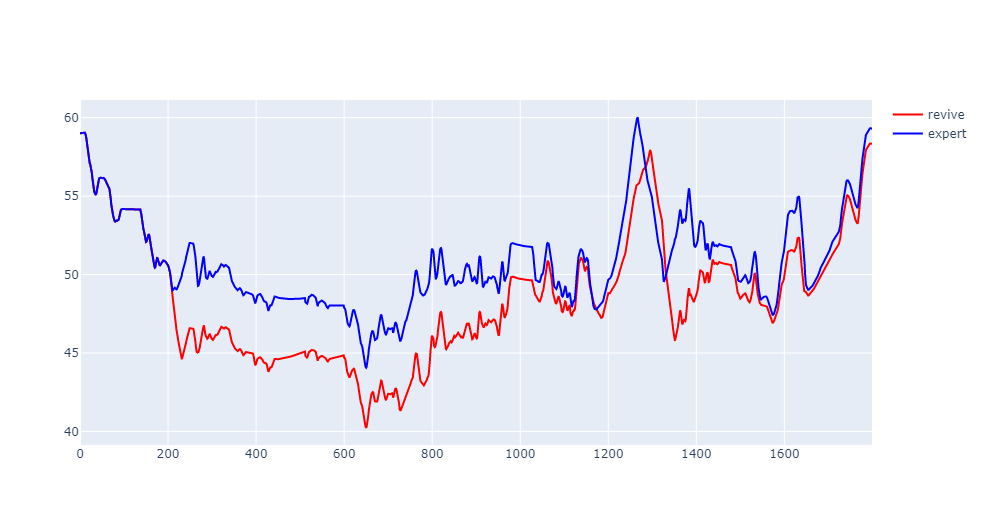
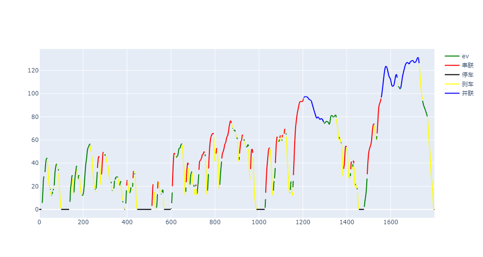
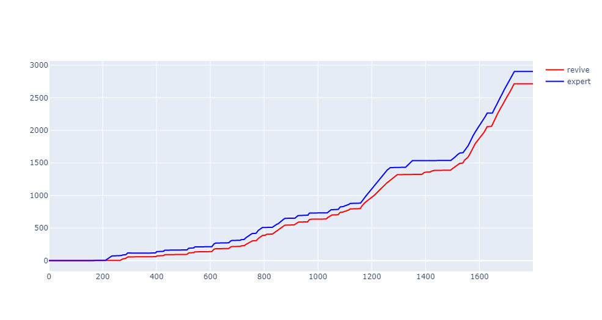